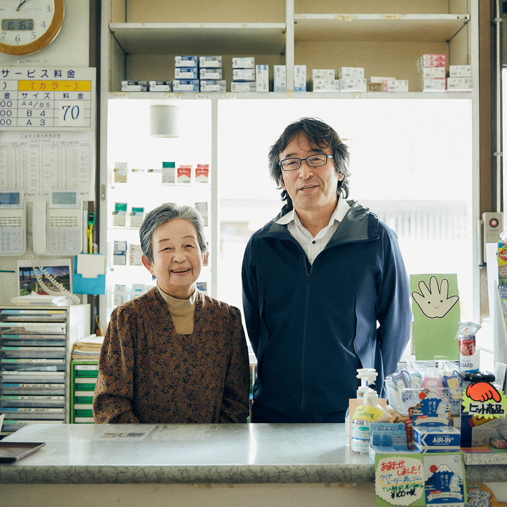
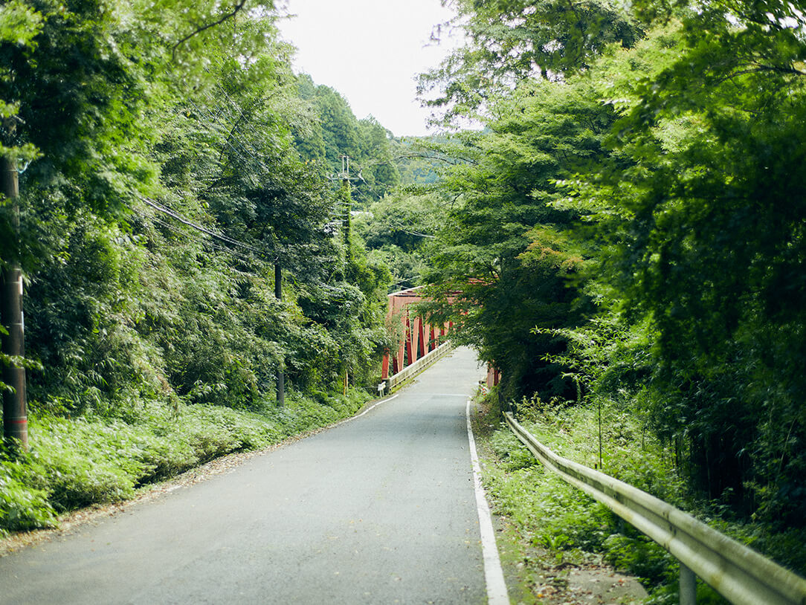

里山と都市。行き来しやすい立地にある市原市での働き方。
ワーケーションのような働き方が、里山と都市部が近い市原市では日常の暮らしとして溢れています。寛容なこのまちでは、新たにくる企業や人にも市役所や市民も寄り添ってくれます。


日本一の数を誇る市内33箇所のゴルフ場や、子供から大人まで楽しめる体験型ワークショップやイベントが開催される美術館など、働く人におすすめしたい観光情報をご紹介します。仕事のあとや休日に、市原の魅力を満喫してください。
市原にで働く方のためのサポート制度をご紹介します。
本市に縁のある大学生や若手社会人などに対して、プログラミング等のICTスキルやコミュニケーション能力を学ぶ研修を実施するとともに、女性や中高校生に教える場を提供します。
さらに、習得したスキルを活用し、アフターコロナへの対応など本市の地域課題を解決する力を育成し、地域への愛着の醸成を図るほか、Society5.0の時代を牽引する産業人材へと成長させ、起業・創業促進、地域雇用創出につなげます。
市内中小企業や創業希望者などからの各種相談にワンストップで対応するとともに、公的機関や企業間のマッチング、各種関連情報の収集や発信などを行う産業支援拠点として、「市原市産業支援センター」を市原商工会議所内に設置しております。
行政や企業の枠組みに捉われず、公民連携により地域課題を解決する「オープンイノベーションプロジェクト」を実施しております。
いちはらが持つ広大なフィールドや資源を活用し、企業のビジョンと本市のまちづくりをともに実現することを目指します。